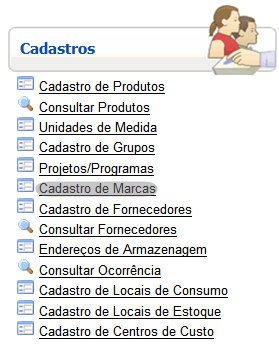
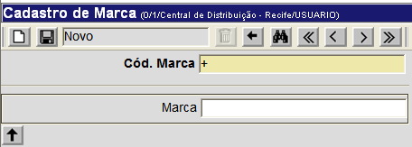
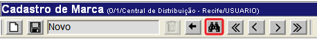
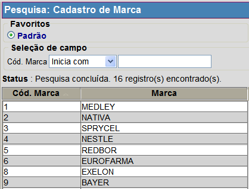

Cadastro de Marcas [ Voltar]Utilize este formulário para cadastrar e editar as marcas de medicamentos no Sistema. Para acessar o formulário, vá ao menu "Cadastros" na página inicial e clique em "Cadastro de Marcas". 
Ao clicar no link, o sistema abrirá a seguinte tela: 
Selecione uma das duas opções abaixo para ver o passo-a-passo: Cadastrar marca Editar marca cadastrada Cadastrar marca1º Passo: preencha o campo Marca.
2° Passo: clique no botão  para salvar o cadastro. para salvar o cadastro. Editar marca cadastrada1º Passo: para localizar a relação que deseja editar, clique no botão da barra de botões. da barra de botões. 
Na tela de pesquisa do formulário "Cadastro de Marcas", são exibidos os filtros Código" e "Marca" para fácil localização do registro desejado. Configure os filtros da pesquisa para que o sistema retorne automaticamente todos os registros correspondentes. Para mais informações sobre outros recursos e funcionalidades da pesquisa, favor ver o manual Introdução ao Sistema. 
Assim que o endereço é selecionado, seu cadastro será aberto e exibidas as informações atuais. 2° Passo: edite as informações da relação.
2° Passo: clique no botão para salvar o cadastro. |